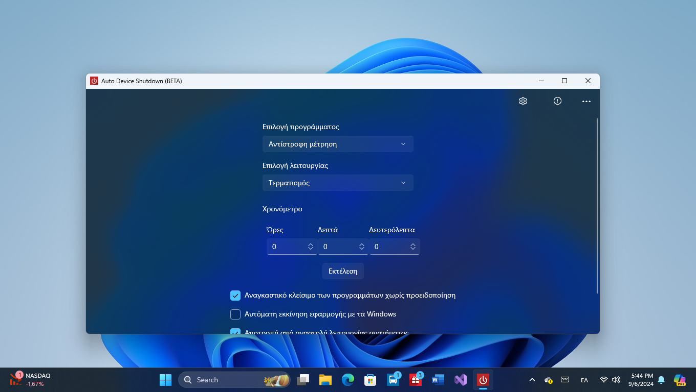
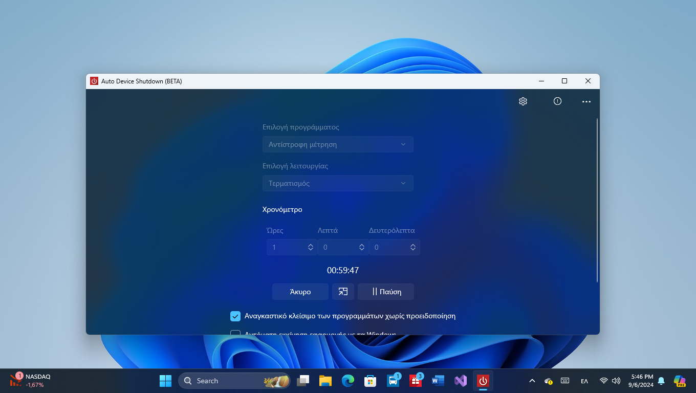

Auto Device Shutdown
Προγραμματισμός τερματισμού για Windows.
Screenshots


Περιγραφή
Ρυθμίστε αυτόματο τερματισμό, επανεκκίνηση ή αδρανοποίηση με απλό περιβάλλον χρήστη.
Προγραμματισμός τερματισμού για Windows.


Ρυθμίστε αυτόματο τερματισμό, επανεκκίνηση ή αδρανοποίηση με απλό περιβάλλον χρήστη.